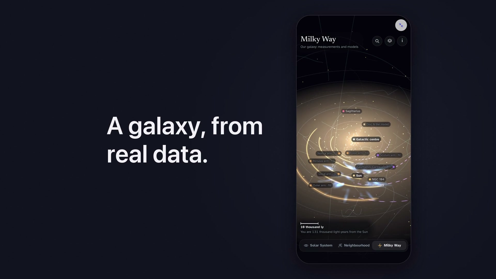

Snuggery
Where your AI apps live.
Built something with AI? Give it a home. Import the ZIP, tap it, it runs — offline, private, on your phone.

Fifty seconds of it: the galaxy, an oil field, a human body, the loop, and a dashboard that refreshes itself. See the showpieces — the galaxy, a 3D mountain, an oil field, a human body, two atlases of oil and gas, 750 million years of Earth — every one built by asking an AI, and every one of the sixteen example apps running in your browser so you can look before you install anything.
And a real one, not a demo: the planner for a bench under my own window, which I asked an AI for and dropped into Snuggery. It is in Norwegian because it is mine.
How it works
- Describe what you want. Snuggery writes the prompt.
- Paste it into Claude, ChatGPT, or any AI you already use.
- Bring the ZIP back and import it. It runs instantly.
Your apps read files you can edit — change a number in a .csv and watch the
chart move. Everything lives in one library alongside your PDFs, notes, and images.
The whole loop, in one take: a recipe app asked for in Create, built by an AI, shared back to Snuggery, running — and then changed with one more message.
Ask a question about a file, a folder or a mini-app's data and it is answered on your iPhone by Apple's on-device model, on phones with Apple Intelligence. Nothing is sent anywhere.
No account. No cloud. No analytics. Mini-apps run in a sandbox with the network switched off, and nothing you make ever leaves your device. One payment, once — no subscription.
Download on the App Store — one purchase after a free week, for iPhone (iOS 18 and later).
Help and legal
- Support — common questions, and how to reach a person
- Privacy Policy — short, because Snuggery collects nothing
- Press — the facts, clips and screenshots, ready to use